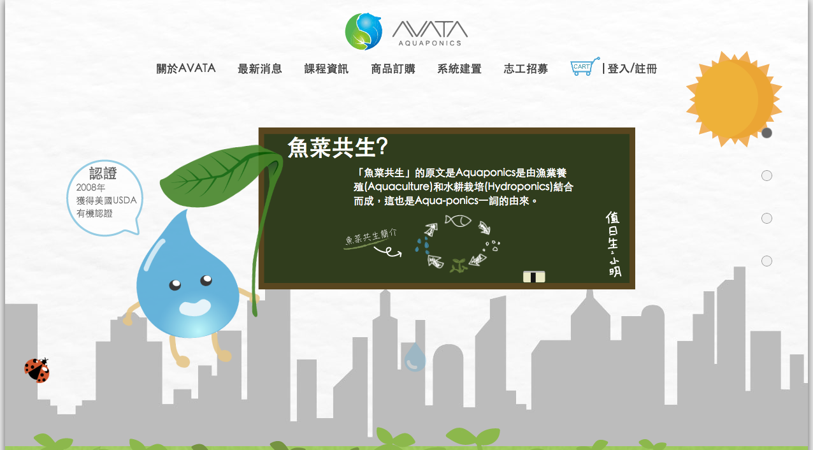
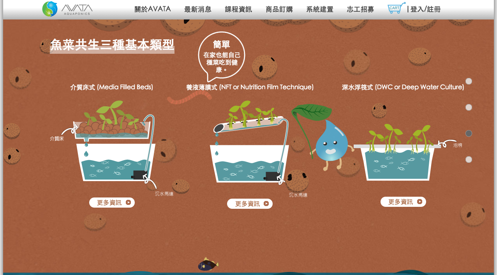
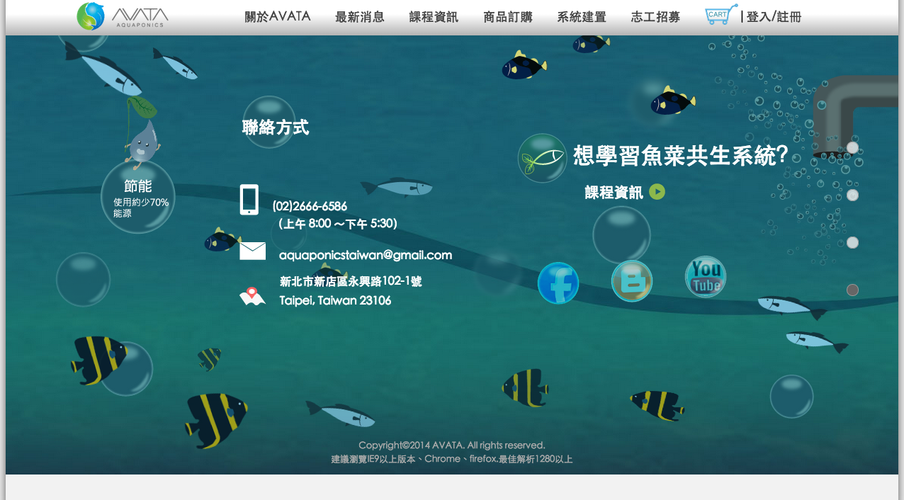

文章分享
avata 魚菜共生 網站
- 2011-01-01
- Ming yu
- web

[前言...]
經過ㄧ年海軍陸戰隊的洗禮後，重新回到人間，面對現實社會。
剛退伍，對於人生的不安，未來得不確定感到惶恐。看看周遭的朋友，再看看自己。
發現自己好像沒有什麼可以搬上檯面的技能。肚子裡好像也都沒什麼墨水了。
此時，有位好友推薦我可以再去資策會進修、學習技能。
雖然學費高達十萬，但可以利用政府的「青年就業讚」計劃全額補助。
深感沒有時間可以讓我蹉跎了，因此立馬申請補助資格，並且報名了資策會的課程。
(類似「多媒體網頁設計班」，但是實際課名我忘了，學習內容就是adobe軟體技能，網頁設計，
程式碼 - javascript、jQuery、HTML、CSS、PHP，大致上就這些。)
大約半年的課程即將結束時，每組人馬會需要製作一個網頁專題。我們這組三個男生決定的專題主題是
「魚菜共生」，由組長和實際農場接洽後，開發該網站。並計劃於專題結束後，將網站移交給該農場。
該網站使用PHP+mysql+phpmyadmin，最終架設在智邦的主機上。
因為是第一次接觸code，第一次寫網站。所以使用的PHP並無使用任何framework。
--以上是廢話--
首頁為了活潑有趣點，採用視差捲動的動畫呈現。首頁分為四個部分向大家介紹有關 avata魚菜共生。
該頁面使用了 skrollr 套件來製作出視差捲動的動畫效果。(參考下面圖片以及影片)


未完待續...